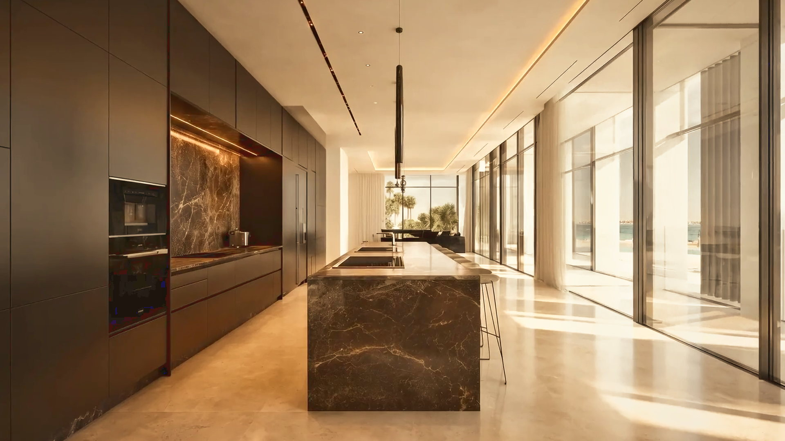
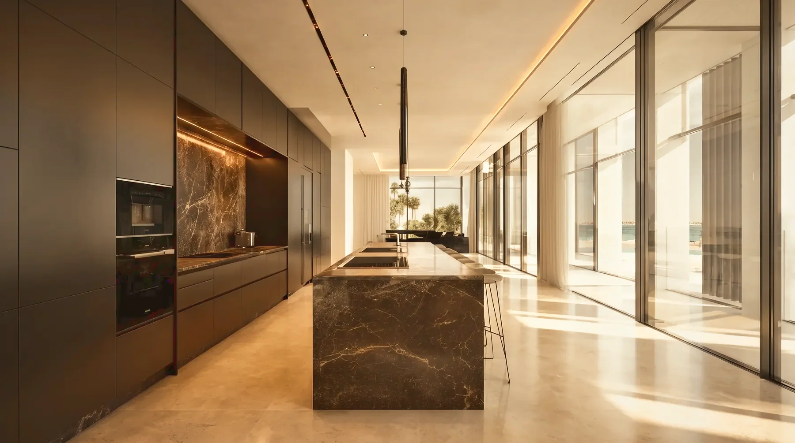

- Fast
- Smart
- Fine
- Light
Fast-Track Transformation.
Karen K’s signature transformation service — distinct from full turnkey projects
A strategic approach to transforming existing properties with maximum impact and minimal unnecessary demolition. We retain what works, redefine what does not, and focus investment where it changes the space most. The Karen K Method combines accelerated delivery, cost-conscious design, high-quality finishes and minimal to zero demolition.
- FastAccelerated delivery
- SmartCost-conscious design
- FineHigh-quality finishes
- LightMinimal to zero demolition
- 01
Assess
We study the property, its potential and its limitations. What stays, what changes and where the greatest impact can be achieved are established from the outset.
- 02
Reimagine
The existing space is reconsidered through layout, material, lighting, proportion and atmosphere — creating a clear new direction without starting from zero.
- 03
Plan
Scope, priorities, budget and programme are defined before execution begins, creating a focused roadmap for a fast and controlled transformation.
- 04
Source
Finishes, lighting, furniture, joinery and key statement pieces are selected and coordinated to deliver the new identity of the space.
- 05
Execute
Contractors, suppliers, procurement and installation are coordinated on site, with each intervention managed to minimise disruption and unnecessary works.
- 06
Reveal
The final layers are installed, styled and refined until the transformation is complete — a substantially new experience of the property without rebuilding it from the ground up.
Transformations

 BeforeAfter
BeforeAfter

 BeforeAfter
BeforeAfter

 BeforeAfter
BeforeAfter
For tenants, reversible and non-invasive solutions can preserve the original property and protect the security deposit.
For owners, the same approach delivers a faster, smarter transformation without rebuilding from scratch.
You may not own the property. But you own the years you live in it.
The Method, Explained.
Karen on the thinking behind the method: speed and efficient delivery, value and considered investment, finish quality, minimal unnecessary demolition, and transforming owned and rented properties alike.
Ready to transform what already exists?
See what is possible without starting from zero.
Start your transformation